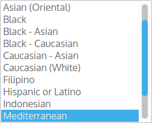
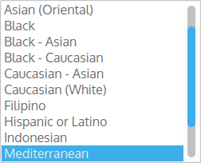

4. The Database¶
4.1. Tables¶
4.1.1. User¶
- has_one Face, destroy it with the user
- belongs_to an Ethnicity
- has_many Photo, destroy them with the user
- has_many Friendships (same for inverse_friendships)
- has_many Friends though Friendships (same for inverse_friendships, inverse_friends)
- has_many Enmities (same for inverse_enmities)
- has_many Enemies though Enmities (same for inverse_enmities, inverse_enemies)
class User < ActiveRecord::Base
has_one :face, dependent: :destroy
belongs_to :ethnicity
has_many :photos, dependent: :destroy
has_many :friendships, dependent: :destroy
has_many :friends, :through => :friendships
has_many :enmities, dependent: :destroy
has_many :enemies, :through => :enmities
...
end
4.1.2. Face¶
- belongs_to User
- belongs_to Nose
- belongs_to Mouth
- belongs_to Eye
- belongs_to Shape
- belongs_to Eyebrow
- We validate the presence of each of these facial features.
class Face < ActiveRecord::Base
belongs_to :user
belongs_to :nose
belongs_to :mouth
belongs_to :eye
belongs_to :shape
belongs_to :eyebrow
validates :mouth_id, presence: true
validates :shape_id, presence: true
validates :nose_id, presence: true
validates :eye_id, presence: true
validates :eyebrow_id, presence: true
end
Note
We use belongs_to instead of has_one because we store the foreign keys into the Face Table. A User do not create a Nose, she/he just pick one from the existing ones.(that is why we only save the foreign key hence the belongs_to association)
4.3. Filters (scopes)¶
Rails gives us the possibility to write scopes inside our ActiveRecord Model. Scopes are usefull to make filters, as the one used to find your TwinStranger, or as an admin to find a user. Here are some scopes that we use to filter the database.
4.3.1. User¶
4.3.1.1. friend_with¶
The friend_with method tell us if another user is friend with the current_user.
We can also create a def (method in Ruby) to use the scope in our View.
scope :friend_with, ->(other) do
other = other.id if other.is_a?(User)
where('friendships.user_id = users.id AND friendships.friend_id = ?'), other).joins(:friendships)
end
def friend_with?(other)
User.where(id: id).friend_with(other).any?
end
This scope let us hide the add friendship and add enmity buttons in our View for a User that is already a friend.
Note
If a user tried to add a add friendship button on the view, she/he will not succeed in adding a friend a second time because we check the unicity of the association. (on the database with an index and on our Ruby On Rails application too). The user will only have a flash with the message “Unable to save Twin”.
Here is the code of our Friendship class:
We are using a scope to check the unicity of a pair (user, friend), a friendship between the user and a friend is unique.
class Friendship < ActiveRecord::Base
belongs_to :user
belongs_to :friend, :class_name => "User"
validates_uniqueness_of :user, :scope => :friend
end
4.3.1.2. facial features¶
We can make scopes to filter Users sharing or not the same facial features
class User < ActiveRecord::Base
scope :with_face_nose_id, lambda { |nose_id|
return if nose_id == '0'
joins(:face).where('faces.nose_id = ?', nose_id)
}
...
end
In our View we set the checkboxes to send the id of the feature instead of the default 1 (3rd option in the check_box method). 0 is receive when a checkboxe is unchecked.
= form_for_filterrific @filterrific do |f|
.row
.col-xs-6.col-sm-4
.form-group.chardin_box{ :'data-position' => 'top', :'data-intro' => 'Filter by Face Shape.' }
.btn.btn-default.btn-block
%label
= inline_svg('shape/'+ @user.face.shape.description+'.svg', size: '200px * 100px', class: 'img-responsive')
= f.check_box :with_face_shape_id, {}, @user.face.shape_id
...
We want the user to have her/his facial features displayed so we initialize with_face_shape_id in :default_filter_params.
The :select_options is only present if we want to display all the face shape in a dropdown menu.
class PagesController < ApplicationController
...
def inside
@user = current_user
@filterrific = initialize_filterrific(
User,
params[:filterrific],
:select_options => {
with_face_shape_id: Shape.options_for_select,
...
},
:default_filter_params => {
with_face_shape_id: @user.face.shape_id,
...
}
) or return
@users = @filterrific.find.page(params[:page])
...
end
...
end
Note
We use the filterrific gem to render beautiful and well integrated filters.
4.3.1.3. ethnicity¶
The scope used to filter Users by ethnicity.
class User < ActiveRecord::Base
scope :with_ethnicity_id, lambda { |ethnicity_ids|
where(ethnicity_id: [*ethnicity_ids])
}
...
end
In our view we have:
= form_for_filterrific @filterrific do |f|
.row
.col-md-3
.form-group.chardin_box{ :'data-position' => 'top', :'data-intro' => 'Filter by ethnicity.' }
%label Ethnicity
= f.select :with_ethnicity_id,
@filterrific.select_options[:with_ethnicity_id],
{ :include_blank => '- Any -' },
{ :class => 'form-control' }
 

And to display the list of all ethnicity in a dropdown as above we had to add this method inside Ethnicity
class Ethnicity < ActiveRecord::Base
has_many :users
# Map the list of ethnicities
def self.options_for_select
order('LOWER(description)').map { |e| [e.description, e.id] }
end
end
In our PagesController we populate the dropdown menu with the options_for_select method from Ethnicity that we just created.
This is done with setting with_ethnicity_id in :select_options. We want the user to have her/his ethnicity selected by default, this is done by setting with_ethnicity_id in :default_filter_params as follow:
class PagesController < ApplicationController
...
def inside
@user = current_user
@filterrific = initialize_filterrific(
User,
params[:filterrific],
:select_options => {
with_ethnicity_id: Ethnicity.options_for_select
},
:default_filter_params => {
with_ethnicity_id: @user.ethnicity_id
}
) or return
@users = @filterrific.find.page(params[:page])
...
end
...
end
4.3.1.4. recap¶
Note
This is how our PagesController looks like with all the filters.
By default we hide admin accounts, locked users and only display users confirmed and of the same gender. Those options are non negotiable for the user.
However the user can change the facial features, age range and ethnicity parameters.
class PagesController < ApplicationController
before_action :authenticate_user!,
only: [
:inside
]
...
def inside
@user = current_user
@filterrific = initialize_filterrific(
User,
params[:filterrific],
:select_options => {
age_lt: 13..100,
age_gte: 13..100,
with_face_shape_id: Shape.options_for_select,
with_face_eyebrow_id: Eyebrow.options_for_select,
with_face_eye_id: Eye.options_for_select,
with_face_nose_id: Nose.options_for_select,
with_face_mouth_id: Mouth.options_for_select,
with_ethnicity_id: Ethnicity.options_for_select
},
:default_filter_params => {
with_face_shape_id: @user.face.shape_id,
with_face_eyebrow_id: @user.face.eyebrow_id,
with_face_eye_id: @user.face.eye_id,
with_face_nose_id: @user.face.nose_id,
with_face_mouth_id: @user.face.mouth_id,
with_ethnicity_id: @user.ethnicity_id,
with_gender: @user.sex,
with_admin_only: 0,
with_locked_only: 0,
with_confirmed_only: 1
}
) or return
@users = @filterrific.find.page(params[:page])
respond_to do |format|
format.html
format.js
end
rescue ActiveRecord::RecordNotFound => e
puts "Had to reset filterrific params: #{ e.message }"
redirect_to(reset_filterrific_url(format: :html)) and return
end
...
end
4.4. Security¶
4.4.1. Sanitize the database¶
The application does not allows SQL Injection, here is a comic by XKCD explaining the problem:

- In our scopes we have to follow this guideline:
- OK: where(country_id: param)
- OK: where(‘students.country_id = ?’, param)
- BAD: where(“students.country_id = ‘#{ param }’”) : security flaw, the user can make an SQL Injection
More info about Sql injection and Rails: Rails doc